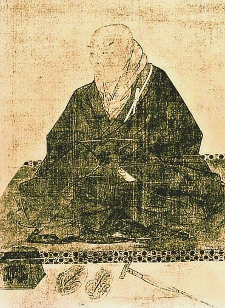

Sacred Texts
Buddhism
Buy this Book at Amazon.com
|

|
Shinran and His Work
by Arthur Lloyd
[1910]
|
Contents
Start Reading
Page Index
Text [Zipped]
The Reverend Arthur Lloyd spent many years in Japan as a missionary and scholar.
He extensively studied the Pure Land school of Buddhism, particularly
the Shinshu sect founded by Shinran Shonen (b. 1173, d. 1262).
This book centers around Lloyd's translation of
the 'Shoshinge' or Hymn of True Faith, followed by extended commentary
on the text which illuminates many aspects of Shinshu belief and practice.
Lloyd, with his unique perspective,
found numerous similarities between Christianity and Buddhism
at deep levels.
Lloyd also wrote The Creed of Half Japan,
also available at this site.
PRODUCTION NOTES: Short passages or words in Japanese script in the text
are replaced by a single hash sign (#).
The Japanese text of the Shoshinge on pages 36-46
is presented as JPG page images.--John Bruno Hare, December 22, 2008.
Title Page
Preface
Contents
Chapter I. Introductory
Chapter II. The Shinshu in its relations to S’akyamuni and to Buddhism in general
Chapter III. Shinran, the Founder of Shinshu.
Chapter IV. The Shinshu after Shinran's death.
Chapter V. The Shōshinge
Chapter VI. Objects of Worship
Chapter VII. Shintai and Zokutai.
Chapter VIII. Amida Nyorai.
Chapter IX. Hōzō Biku.
Chapter X. Shinnyo Hōshō.
Chapter XI. The Salvation of Sentient Beings.
Chapter XII. Of Faith in General, (i).
Chapter XIII. Of Faith in General, (ii).
Chapter XIV. After Justification.
Chapter XV. Hō-on.
Chapter XVI. Sōzoku.
Chapter XVII. Keijin.
Chapter XVIII. The Shinshu on Faith-healing.
Chapter XIX. The Care of the Dead. (A Shinshu Funeral.)
Chapter XX. The Care of the Dead. (ii) Days of Mourning &c.
Chapter XXI. Morning and Evening Prayers
Chapter XXII. Fasts and Festivals.
Chapter XXIII. Fasting.
Chapter XXIV. Conclusion
Appendix I. Kōmyōji.
Appendix II. Manichaean influences in the Shinshu
Appendix III. Caulaucau
Index of Japanese Terms and Sentences